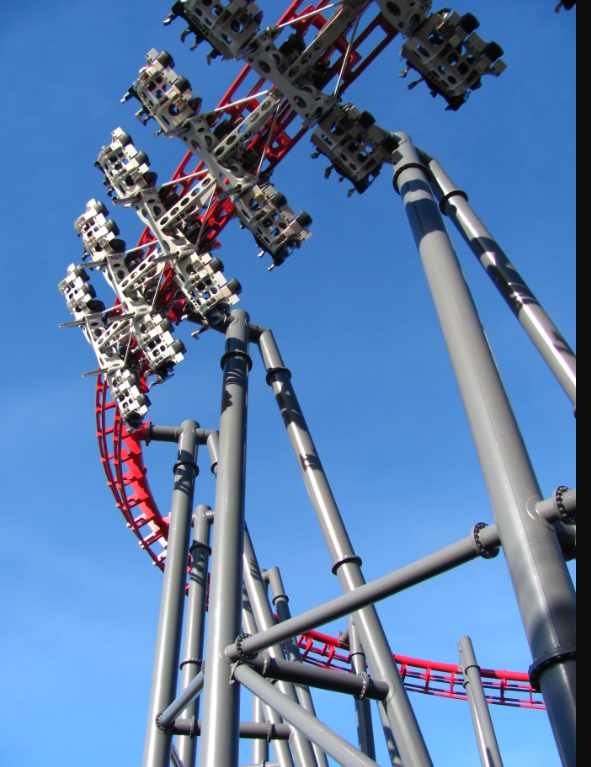

X2 is the most recent defunct coaster on this list and a very sad one that we lost. X2 was a 4th dimension coaster made by the now defunct manufactor, Arrow dynamics. Orginally it was called X and was refribished by S&S which bought Arrows assets and it was renamed to X2. Recently it was closed as many lawsuits have been coming out of people getting hurt on the ride which forced Six Flags to close the ride.
